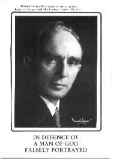

<#860804#>
Gatwick Airport6.46am. Waiting in the departure lounge at Gatwick airport. Our British Airways Flight No. KT660 to Palma has been delayed. 7.01pm. Now at Gate 25 waiting to board the Tristar jet. We were supposed to have taken off at 7.00am. We left Summerlands just after 12.30am and drove here via Somerton, the A303 and M3, leaving the motorway at Junction 4, then via Guildford, Dorking and Reigate, arriving at Gatwick Motors [where we parked] at 5.20am. We stopped twice on the journey, first in a lay-by and then, when we couldn’t rest properly because of the traffic, in the car park at Fleet service station. Freda got in the back seat and I put my head down in the front, where I slept for 50 minutes until almost 4.00am. We had light rain during the latter part of the journey and at one point I had to swerve to avoid a young rabbit who ran across the road in front of us, hesitated, then twice changed direction. 7.21am. On board the Tristar, our first experience (I think) of this particular wide-bodied aircraft: we have flown in Boeing 747s, DC10s, Airbus etc. There are 10 seats to a row and we are sitting dead centre in 12E and F. The beach umbrella has gone in the hold, or somewhere, together with several others. As usual we have brought the brown expanding suitcase and the blue travelling bag which have accompanied us on many flights over the years. |
Nightmare11.09pm. Sitting up in bed in our room No. 311 at the Hotel Belsana, Porto Colom, Majorca. I have written nothing since our arrival on Monday. The first two or three days here proved to be a nightmare. The accommodation we had paid for was not available [the hotel was overbooked] and we met with indifference and then outright hostility — “I don’t want people like you in my hotel” — from the management and were treated as trouble-makers by the Intasun representative, who took sides against us without even hearing what we had to say. The young woman concerned, Denise, called me a liar to my face, although she did apologise the following day when I pointed out how unkindly she had behaved. However, the troubles we have had completely ruined the first two or three days of our holiday. Freda had a migraine headache and I have never felt so low, while I was overtaken by a fit of crying such as I have never experienced in my life before, and bawled my head off, my nerves worn to a frazzle. Things have brightened up for us since yesterday, though. We have [at last] got a decent room and yesterday were able to unpack the cases for the first time since we arrived, and this evening we have had our first decent meal since leaving England on Sunday. (The vegetarian meals we requested have been refused us thus far.) [All we asked for was an occasional omelette to go with the poor salad.] I have also been blessed by the Satya Sai Baba book I have been reading, and we have had nice company at dinner with John and Helna from Billingham, Co. Durham. Today we have walked miles, all round the bay, and had a delightful time. We have been sitting on our balcony tonight and Freda has seen three shooting stars. |
An omelette!11.48pm. We have just had a cup of coffee on the balcony after attending a Flamenco show in the hotel at 10.00pm. We disco-danced for a few minutes afterwards. We slept late, until about 8.45pm, and spent nearly all day on the beach, having our lunch there too. Then about 4.00pm we climbed the steps at the far end of the beach and went to a local bar, where Freda had a lemonade and I a beer. After we got back I went to sleep while Freda had a bath, then I had one afterwards. I have got my feet burned today so had twice put after-sun on them. At dinner we were able for the first time to have an omelette. The head-waiter had always refused us, but another vegetarian, a young girl, has arrived. |
Bees share my lemon-juice5.53pm. We have spent a lovely day on the beach at Cala Marsal [about a mile from the small fishing village and harbour of Porto Colom] and have just got back to our room to have a bath. Dinner is at 7.30pm, then tonight we hope to attend a concert of guitar music at the local church. John and Helna joined us for breakfast so we spent longer over our meal than usual. Later we met them again on our way to the beach: they were having a cup of tea at Los Pinos restaurant, where we had a lager and lime the first night. We also went there the next two days and have been there once since. On the way down to the beach we bought strawberry yoghourts to supplement the rolls saved from our breakfast. Also for lunch we had a biscuit and the bananas we bought yesterday on our way back from the beach. I swam twice today as usual but did little else but watch the people going into the water. “Jo Durie”, a girl we have seen here each time we have visited the Cala Marsal, paraded up and down all day and took dips in the sea. A man made a very presentable sand sculpture of an elephant and one of a cat, and various folk photographed it. We were in the centre of the beach, almost at the water’s edge, and pedal-boats were constantly being hired as fast as they were brought back and plonked on the wet sand in front of us. One of the boats wasn’t working properly. The man in charge got a tool box and proceeded to remove the floats. It was a Spaniard in the works. Eventually he and his colleague took the boat away, leaving the floats on the beach, and the proprietor appeared a few minutes later with a new body to be fitted to them. There is a very good bar on the beach above where we were sitting. Freda went to see what they had got and reappeared a few minutes later with lemon tea in nice china cups. Afterwards, as I always do, I ate the lemon and was immediately joined by three bees whom I allowed to share it with me. One sucked the lemon juice from my fingers: I could actually feel the sucking action. The Glass Bottom Boat came in at five past five and disgorged some passengers, then left, empty, apparently to Cala d’Or. There are at least two of these boats plying between here and Cala d’Or, and here and Cala Esmeralda (wherever that is), but there seems to be no published timetable. We are hungry but not looking forward to our dinner. Apart from the soup, which we can’t always eat, the salad is always the same. There is no alternative for us when the third, meat, course comes along and tonight for the fifth time the sweet is melon. At breakfast there is a plentiful supply of bread rolls, margarine and jam, also lemon and orange juice (not pure though) and tea, coffee or chocolate from the Zanussi machine — no fresh milk now, though, except from under the counter. This follows abuse by one or more guests having the jug of fresh milk for their cereals. |
Shooting stars7.06pm. Another lovely day spent for the fourth time on the beach on the far side of the harbour. It is a good 3 or 4 miles away by the time we have walked along the various streets and quaysides and lagoons. We went there on Tuesday too after an even longer walk, when we left the road and tramped over a dirt track to the other, deserted side of the peninsula, where big waves were breaking over the rocks and it was more like Land’s End. We attended a beautiful concert of guitar music played by Josep Ibert at the church last night. It started ten minutes late at 1.10pm and lasted over 90 minutes including an encore. There were over 100 people there. The evening was very hot and afterwards we traipsed wearily back and refreshed ourselves with a cup of Nescafé and Maryland Cookie biscuits while sitting on the balcony trying to cool off. The sky was clear and we again saw some brilliant shooting stars [presumably the Perseid meteors]. Afterwards I had the best night’s sleep since we have been here, disturbed only by a particularly horrid nightmare. |
|
12.05am (Sunday). One day left of our holiday. We shopped this evening then went down to the beach at 1.00pm, where we ate our lunch and spent the afternoon. I went to sleep and woke to find “Jo Durie” sitting right by me. She is French, I think. She and another girl went for a long swim. I swam twice, the second time quite a distance to bring ashore a large sheet of plastic which showed up from the beach. John and Helna have returned home to Billingham this evening. We returned to the hotel to see them off at 6.30pm. The meal looked very poor tonight. We asked Begonia on the desk if we could have an omelette. She phoned the manageress, who gave her permission, and Begonia gave us a note to hand to the head waiter Vicente. As he has never spoken to us except rudely, we gave the note to the lady who clears the tables to give to him. We got our omelettes — one for Jane too — and Vicente, not realising the note had come through us, came over to speak to us. He had received a note now, he said. It was more than his job was worth to give us an alternative dish without the express permission of the management. After swearing at Freda a couple of nights ago when she asked for an omelette, and reducing her to tears, this showed his better side, just as we had prayed. Jane sat at our table, John and Helna having gone from ours and newcomers having taken hers. We had a very pleasant conversation. She is in her first year at Sheffield University. |
|
9.00pm. Back home at Summerlands. We flew back from Majorca yesterday, driving up from Gatwick to Springfields in the afternoon, and from Birmingham down to Glastonbury today. We arrived home at 11.45am, having left Springfields at 8.50am. We stopped at Michael Wood but about ten coachloads of people had done the same, so we came away again without having coffee. It was a pleasure to open the front door and find only a handful of letters on the mat. Jackie had been in earlier and left a jar of flowers for us in the kitchen, and had very kindly sorted some of my mail, stacking it in piles on my desk. It is wonderful to be back and to enjoy some decent food. We had egg, beans and tomato for lunch, and yoghourt; and for tea, lovely cheese on toast, bread and butter and cake and grapes. We had so little food on holiday, mainly rolls and soup and salad (apart from what we bought outside the hotel) and no fresh fruit except melon on 6 out of 14 nights. The hotel wouldn’t even provide breakfast for us yesterday morning when we had to leave at ten to eight. |
Mary Queen of Scots10.13pm. We have spent a delightful evening with Dr Mary [Martin-Bacon]. We went to tea at 5.45pm, I washed up afterwards, then Mary showed us her treasures, some of them priceless. We had a surprise this morning when Brynn Bretonn appeared on TV-am. Unusually I put TV on for the weather forecast, saw an interview with Patrick Duffy on BBC1, then switched over to ITN before switching off. At that precise moment they showed Brynn’s new book How to Handle a Man and there was a very entertaining interview with her. I wrote to Brynn afterwards to congratulate her. The morning post brought me a parcel of four Star paperback editions of Dion Fortune’s occult novels, which I had been looking for. I got them for £3.50. I hadn’t advertised for them but was offered them by [a book dealer]. We also received Mr Barker’s bill for the kitchen, which came to £4,573.94 less the £1,000 Freda had already paid him. It was twice as much as anticipated. Freda couldn’t find the money except by cashing some National Savings Bonds, so I withdrew the money from my Building Society account. I spent the morning answering letters, then we went shopping. When we got back I opened the garage to see whether any parcels had come, and discovered a peacock butterfly in a box of books. It had got tangled up in cobwebs and seemed as though it was dying. I removed the cobwebs then took the butterfly to the buddleia. It began sucking the nectar and eventually revived and (I assume) flew off. In attending to the butterfly I noticed a tiny shrew lying on the terrace, where I had earlier seen a black and white cat. The little animal was dead and unfortunately didn’t revive like some creatures I have handled. I spent the afternoon sitting in my armchair and finished reading Uri by Andrija Puharich. Julia phoned to say that the flat had been broken into yesterday. The TV, video and a suitcase had been taken. She had left her camera here on Sunday and was phoning to check that that hadn’t been taken too. Julia sounded philosophical about the burglary, having experienced the break-in at Clarice & Noel’s last year. It is a horrid experience, though. The phone rang four more times during the afternoon, each time people wanting to buy the wall cupboard which we sold yesterday. We had a most interesting evening with Dr Mary. The treasures she showed us included items from the Prince Regent (later George IV), amongst which was a Valentine card dated 8th February 1838. This happens to be the day on which my great-grandfather William Bower was born. Mary told us the story of how she acquired her various treasures: Valentine, Christmas and Easter cards, and costume jewellery etc. There was a 4,000-year-old Egyptian scarab mounted in a gold pin, which Mary wants to have valued at Spinks’ with a view to selling it. The last item Mary showed us was a pendant with a cairngorm in the centre. She asked what we got from it. Freda thought it was royal, and when I handled it I said, “This is tragic.” I wanted to say, “This person lost her head,” but felt that wouldn’t be right. In fact, the pendant had belonged to Mary Queen of Scots. I had earlier said I felt it was 16th-century. Mary and her late husband Warder both acquired beautiful treasures, some of which — lace-work, embroidery etc. — has already gone to a museum. |
The Consort of Musicke12.38am (Sunday). We have been to Milton Abbey, Dorset, this evening for the concert given by Anthony [Rooley] and the Consort of Musicke. It was a wonderful evening. Afterwards we had supper in the Great Hall. |
Dartington Hall8.44pm. We are spending the evening watching TV. While having tea we watched Part 2 of Blott on the Landscape, which I videotaped last night, and a few minutes of Wednesday evening’s Dallas. After tea I did the washing up and we have since watched a very amusing Ever Decreasing Circles and the second episode of Howard’s Way, which has returned for a second series. We had a disturbed night. It was late when we went up, then I read for quite a while. Freda tossed and turned, waking me up, and then ricked her neck — just like Eva has done — so was in a lot of pain. I massaged her neck and we got off to sleep again, only to be awakened at about 4.45am by the back gate rattling, as it does sometimes in a gale. But there was no wind blowing, so we thought it might be an air-lock in the central heating. I came down to investigate but realised that the central heating wasn’t on, so maybe it was a badger or a fox getting stuck in the gate, or a cat. When I got up to make a pot of tea I put the central heating on on this side of the house, as we have been relying only on the immersion heater since the kitchen was completed. During the day the radiators have all heated up after being vented, but the washing-up water has only been warm; I don’t know why. I spent the morning answering letters while Freda did the washing and left a message on the Barkers’ answering machine. After lunch I did the washing-up — I had to boil a kettle of water first — then as it was a bright afternoon we went and sat in the summer house. I re-read part of H.P.B.’s The Key to Theosophy and later came back up to the house to make us a pot of tea. We both went to sleep in our deckchairs. Anthony and Emma [Kirkby] had an unusual assignment this afternoon at Dartington Hall. The daughter (or daughter-in-law) of the founder contracted a wasting disease two years ago. She asked Anthony and Emma to perform there, but died last Monday. They decided to go ahead with the performance anyway, and I am sure she was present this afternoon. It was great to see Anthony and Emma again, also Evelyn Tubb, who was also at Hawkwood. Last night was the first time we had seen a live performance by the Consort of Musicke, although I have taped some of their Radio 3 broadcasts. The other members are Mary Nichols (alto), Andrew King and Rufus Muller (tenors) and Alan Ewing (bass). Milton Abbey was packed for their concert last night, with many of the men in evening dress. I had my grey suit on, which I wore on Wednesday to take Dr Mary to Heathrow, and Anthony had a suit on too: he often dresses more casually. It took us nearly 90 minutes to drive to Milton Abbey. We arrived at 7.15pm, by which time the Abbey was almost filled. However, we managed to get seats about three rows from the front, Freda in a pew and I on a chair. Anthony was sitting alone in the chancel, head bowed over his lute and trying to tune it. When he looked up he saw us and waved to us, then came down into the congregation to greet us, so I was able to give him the tapes I had copied on Friday. |
|
12.43am (Sunday). We have been to Sherborne this evening; attended a marvellous concert by Shura Cherkassky at Sherborne School, then spent an hour and a half at Nigel’s [Nigel Blair]. We left Beech Cottage at 11.50, arrived home at 12.30am. This morning I labelled the Bible Study tapes and parcelled them up, then completed the tape order for David [Jevons], which included typing and affixing 108 labels. |
|
9.39pm. We have been to Winchester today. [I spoke to the local Wessex Research Group on Prophecy Ancient and Modern, Tape No. 998. We took Dr Mary Martin-Bacon with us.] Freda was taken ill [due to the smell of disinfectant in the hall, was sick on the way home] and went straight to bed on our return at 8.00pm. I have gotten myself a meal and shall be going up soon. |
Shura Cherkassky7.16pm. Freda is finishing the ironing and we are watching Twenty Years of the Two Ronnies, a compilation of some of the funnier of their sketches and songs. I have just been doing the washing-up. I spent the morning writing out a Giro slip and working out what bills I could pay at the same time, and answering letters. Freda did the washing then worked in the garden, gathering up the leaves and mowing the lawn. After lunch I did more work on the letters while Freda made a cake. She put it in the oven, then we paid a brief visit to my parents. They were just finishing their lunch; both seemed quite cheerful. Mam returned a couple of Bible Study tapes and gave me some waste paper, also a bottle to take with ours to the bottle bank. We returned home for 3.30pm in time for Freda to take the cake out of the oven. I did some more office work then had a bath and washed my hair. Afterwards I did some reading then went to sleep for ten minutes before tea. While having tea we watched the first episode of a new production of David Copperfield. While I was writing letters this morning I listened to and taped a recording of last Monday’s Lunchtime Concert, which was given by Shura Cherkassky, a live performance from St John’s, Smith Square. We listened to the broadcast on Monday but switched on too late to record it from the beginning. The concert was of special interest to us because we had seen Shura Cherkassky less than 72 hours previously, also because he performed Rachmaninov’s Variations on a Theme by Corelli on both occasions. The evening at Sherborne was one we shall never forget. I have never seen anyone play the piano with such exuberance and vigour. It was a brilliant performance received with rapturous applause, to which Mr Cherkassky responded with three encores including, amusingly, a piece by George Gershwin. Shura Cherkassky is 75 and celebrated his birthday two days before, i.e. on Thursday 9th, with a concert at Wigmore Hall, where they gave him a cake. A gentleman we were talking to at Sherborne told us there was a review of the concert in the Daily Telegraph. Dr Mary has the Telegraph every day so last Monday, after we had taken her to Martock, I asked her for the paper so that we could read what they said. Shura Cherkassky was born in Odessa in the Ukraine, actually on the 7th October 1911, and received his education at the Curtis Institute of Music, Philadelphia. |
George is 80 today; Jock Ewing has returned from the dead8.51pm. Sir George [Trevelyan]’s 80th birthday. I wrote him a letter and we sent him a card on Saturday. I spent the morning answering letters, yesterday’s and today’s, then collected Freda from her class at the Abbey Barn at midday. On her way there Freda had delivered a letter I had written to Jackie & Allan. A letter had come this morning from Jackie to say that Allan’s mother died last Friday at 5.30pm. In town Freda went to the bank and I to the post office to post the letters and buy stamps, then to the Building Society to pay in a cheque for £3.36. That was the amount I “owed” to my account after meeting various expenses and paying cheques and P.O.s to Girobank, so I was amazed to find this morning that we had received a cheque for that exact amount. It came from Hugh’s solicitors, a final payment of the legacy he left us. After buying fruit and vegetables and Freda had got Radio Times and TV Times, we called on the way home at Walton Press, where I obtained a quotation from Joe Snuggs for the Tape list and Biography to be printed, 1,000 of each on coloured paper. I was hoping to print them on Nigel’s photocopier, and wrote to ask if we could go over one afternoon this week. I haven’t heard from him so guess he is away or too busy to phone. I called on Joe the other week and learned that his partner Mr Wilkinson had had a heart attack. Joe told us today that he died a fortnight ago, so he is left with more work than he can cope with. Mrs Snuggs was there helping out. When we got back, at ten to one, there was a parcel of Yashima tapes in the garage, delivered by Securicor. I ordered them before we went on holiday. They are UFO+ C90 cassettes, which should be alright as I have had them before. The Yashima UCD tapes were a disaster. Several letters had come by second post, which I answered after lunch. I went to the post at 3.00pm, then joined Freda in the garden and lit a bonfire. Freda finished cutting the long grass today — a tremendous feat really — and I carried up the cut grass almost non-stop for an hour, burning it very fast despite the rain that was falling. As usual the robin kept us company. I stayed outdoors until 5.10pm, by which time it was dark. I raked the upper lawn clear of most of the leaves: the trees and fallen leaves are beautiful. We watched This is Your Life while having tea — it was Gordon Kaye of ’Ullo ’Ullo — then Coronation Street and Dallas. After Bobby Ewing’s resurrection, Miss Ellie’s late husband Jock has returned from the jungle after being killed off in a plane crash several years ago when the actor died. During the evening I have also prepared my materials for tomorrow’s art class (although I have asked Arthur [Arthur Maderson] to demonstrate watercolour painting), and I have cleaned up a booklet which I borrowed yesterday from Reg. He had spilt coffee over it, or something. The booklet is by Albert Edsor, In Defence of a Man of God Falsely Portrayed. Two books have been published recently, purporting to tell the story of George Jeffreys and denigrating him. |

Albert Edsor’s booklet about Principal George Jeffreys. Two other recently published books purport to tell his story but denigrate him. |
A.J. Sylvester7.12pm. Back home at Springfields. We left Summerlands at 10.26am and arrived here at 5.36pm, having visited A.J. Sylvester on the way up. I did the washing up after breakfast and loaded the car. Only one letter came in this morning, from Alma Nicolson in Australia, so we were able to get off without delay. Before breakfast I had written to Muriel Stevenson, also to Mr Richards of Somerton, who was wanting to purchase the Grampian microphone for the Brenell he had from us. We posted the letters in Tor View Avenue. We hadn’t seen A.J. for a few months, although we had been wanting to. When we got to Rudloe Cottage and let ourselves in, we found him lying on the studio couch in his paper-strewn study. He had a car rug over him and told us he had been in great pain with his heart and stomach. He talked the whole time, though, then when he asked what we had been doing and the subject of dancing came up, he began enthusing about the fox-trot, his favourite dance, and was soon standing up. Freda made us a cup of coffee and A.J. produced a jam sponge cake (made by Mrs Carpenter), which we had a slice of, and we had a most interesting conversation. A.J. enthused about Sir Maurice Hankey, whose Private Secretary he had been. (I believe it was Hankey who recommended A.J. to Lloyd George.) He showed us the two volumes of Hankey, Man of Secrets. The discussion turned to L.G.’s leaving the chancellorship to take on the responsibility of munitions. A.J. has several times talked to us about this and reminded us of the problem of shells that wouldn’t detonate. |